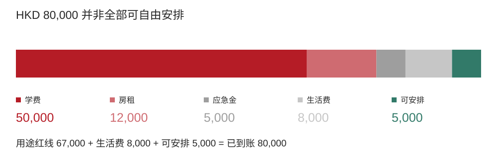
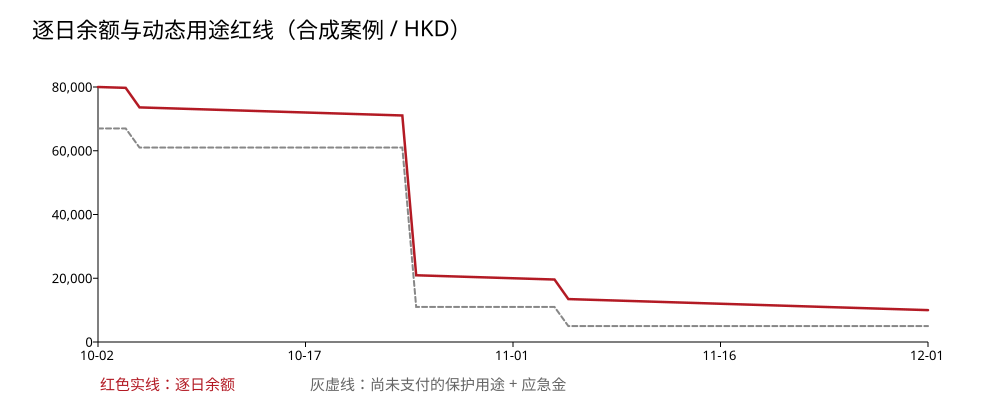
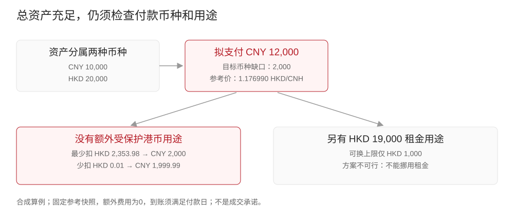
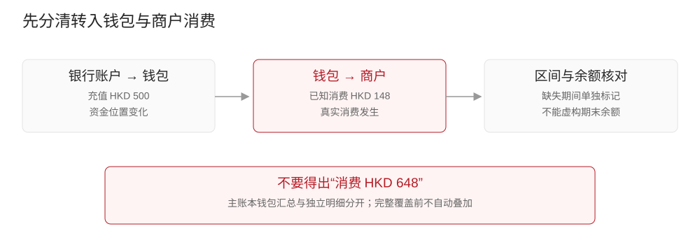
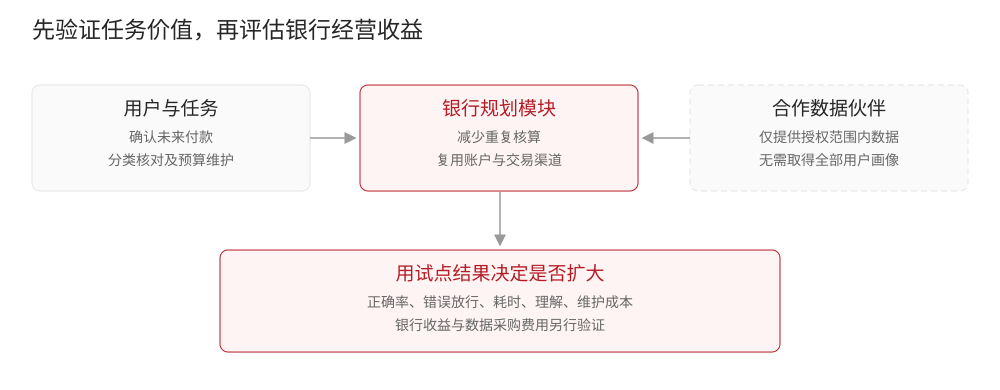
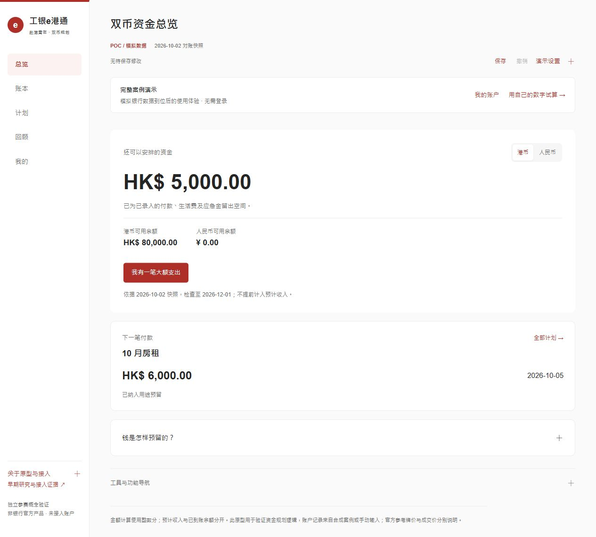
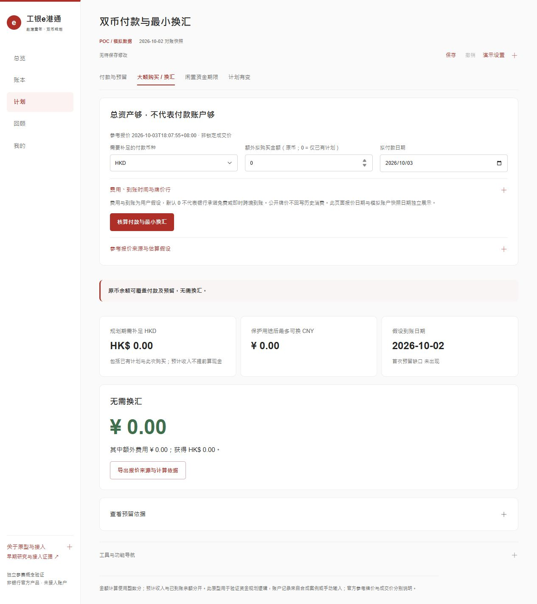
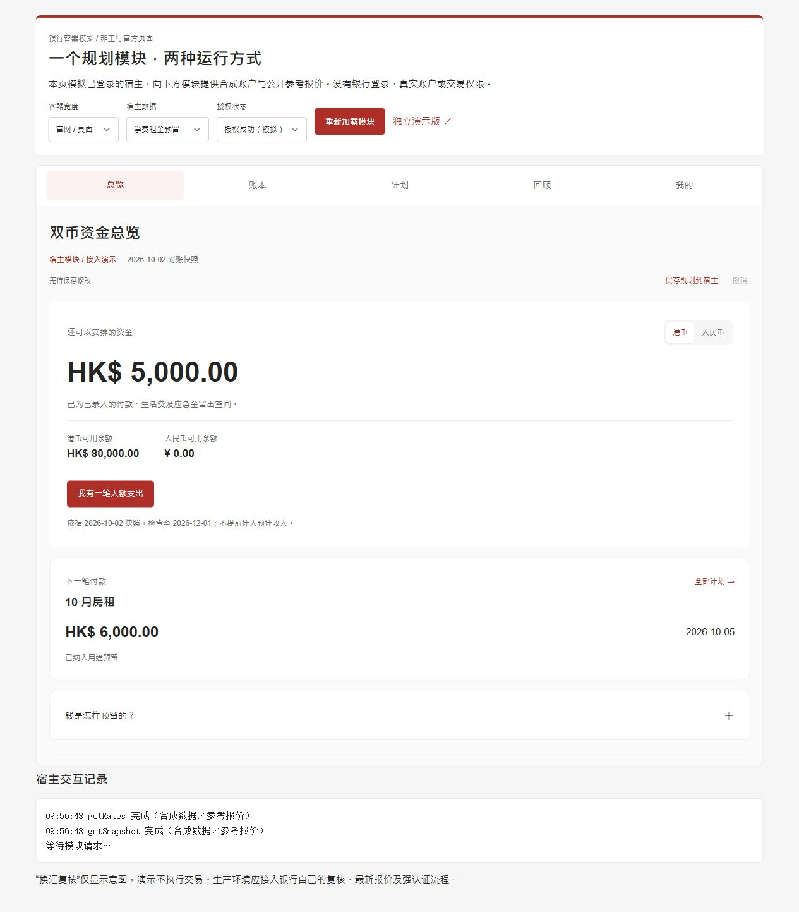
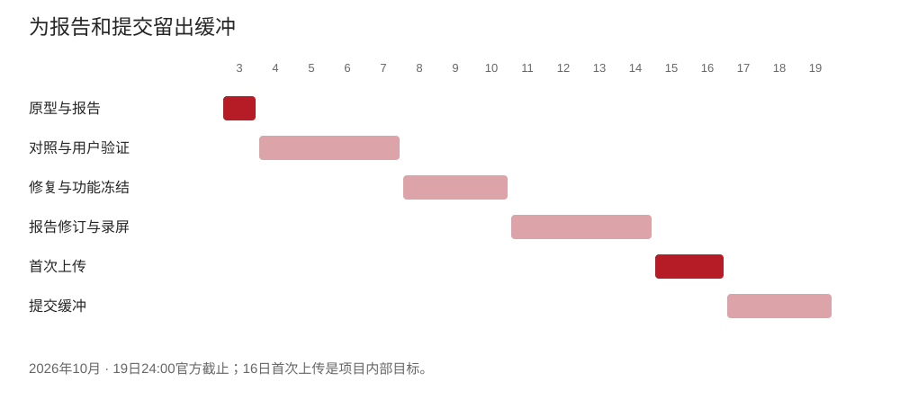

双币 e 管家
面向赴港青年、联动用途预留与最小换汇的双币资金规划助手
第十七届“工行杯”全国大学生金融科技创新大赛 · 中文参赛报告工作稿
建议方向：青年群体服务；关联数字金融、特色金融服务。
版本：v0.7 · 2026年10月3日 · 独立参赛概念，非银行官方产品。
阅读说明。 本文中的产品功能与测试结果对应已实现原型；账户和流水演示均为合成案例。涉及用户需求、银行经营效益和机构合作的部分分别标明研究假设、拟验证指标与待确认事项。本稿可供共同修订，尚不等于已完成用户实证或可直接提交的最终稿；作者、院校、指导教师、实际分工及工具使用说明应由参赛者核实补齐。线上网页是展示渠道，不能替代赛事系统要求上传的作品文件。
目录
一、项目摘要；二、项目简介与产品方案；三、技术架构与创新机制；四、市场与竞争分析；五、商业模式与推广策略；六、原型演示与验证；七、实施进度与资源；八、风险分析及应对；九、结论；附录：功能、证据、演示脚本与参考资料。
一、项目摘要
银行账户里的余额并不全是可以花掉的钱。对于在香港求学或初入职场、同时使用人民币和港币的青年，学费与房租可能提前到账，却要数周以后支付；家人汇来的生活费、工资及报销可能尚未到账；手机、机票等大额购买又可能以另一币种结算。即使折算后的总资产足够，指定付款账户在付款日仍可能缺钱。用户需要回答的不是单独的“我有多少钱”，而是“扣除既定用途以后，这笔钱在这个日期、以这个币种能不能付”。
“双币 e 管家”围绕这一问题，在分类账本之上建立用途预留、逐币种逐日检查与最小换汇的联动流程。用户确认学费、房租和应急金，系统按两条现金流检查短期付款能力；新增购买时，进一步计算在不挪用另一币种已保护资金的条件下，最低需要换出多少资金，以及到账能否赶上付款。如果约束无法同时满足，系统解释缺口来自币种、用途还是时点，并引导用户减少、延后可选消费或确认新增资金。
原型已实现分类、筛选与忽略统计、双币生活预算、重复付款计划、软预警红线、双向换汇、公开参考牌价、月度回顾、八达通明细导入与核对、存款期限容量初筛、备份及撤销。网页可独立运行，也能在模拟银行宿主中加载同一规划模块。已有132项自动测试通过，且在 Render 构建环境执行通过；这证明已覆盖测试范围内的计算与集成行为，不代表银行验收、真实用户效果或生产安全认证。
项目的主要增量是把用途、日期、币种和到账条件放进同一个可解释的付款决策过程。基础记账、预测、换汇和银行目标规划已有成熟产品；本项目不把这些功能本身包装成行业首创。八达通补充香港生活中的消费可见性，但真实接口接入尚待答复，不构成主流程运行的先决条件。
商业上，项目优先定位为银行既有账户与跨境服务中的规划模块。先验证用户能否更准确、更快地完成资金安排，再评估其对服务使用、客户留存和稳定资金管理的价值。比赛阶段不通过真实交易、收益承诺或夸大的用户增长数字证明价值。
二、项目简介与产品方案
2.1 项目背景与问题界定
赴港青年的资金管理具有两类同时存在的复杂性。第一类是用途与时间：余额中有近期要交的学费、押金及房租，也有日常生活费，到账日期和付款日期并不一致。第二类是币种与渠道：人民币资产和港币资产可以进行价值比较，但需要经过兑换、转账和到账，才能成为收款账户可用的资金。若只显示总资产，用户容易忽略货币转换与时间约束；若只按月分类，用户又要自行把未来付款与当前余额联系起来。
本项目将决策窗口限定在用户确认的短期规划期内，典型是一个学期或入职过渡期。它不预测长期财富收益，不判断汇率未来涨跌，也不以借贷作为资金缺口的默认解决方式。规划期以外的义务不能被“看不见”地视作不存在：原型会阻止相关可行性判断并要求调整日期或覆盖范围。
2.2 目标用户与使用任务
核心用户是同时存在人民币与港币收支、在香港生活的非本地青年，首批验证集中于内地赴港学生及毕业初入职场群体。这个定义强调资金行为，不把所有非本地青年都视作同质市场。仅使用其他外币或没有双币付款需求的用户，可作为后续扩展对象，当前版本不能宣称已经覆盖。
| 细分场景 | 主要约束 | 希望完成的任务 |
|---|---|---|
| 学生：学费提前到账 | 已到资金有明确用途，日常消费不断发生 | 知道扣除学费、房租和生活费以后还可安排多少 |
| 学生：生活费待到账 | 预计收入与实际到账存在差异 | 看清按时到账与延迟到账的差别，避免提前使用预期收入 |
| 初入职场：租金与工资错位 | 押金、首月房租、首薪可能分属不同时间 | 识别过渡期内的首个缺口，而非只看月底净收入 |
| 双币购买：人民币买电脑 | 原币不足，另一币种可能已有租金用途 | 计算最少兑换额，并检查兑换后港币是否仍够用 |
| 香港日常消费：八达通 | 银行充值记录无法直接说明每笔消费 | 区分转入钱包和真正消费，标明未覆盖区间 |
以上为设计场景，不是已完成访谈的统计结论。后续招募应覆盖至少两类生活阶段，记录真实资金安排方式和任务困难，避免只用开发者个人体验替代需求验证。
2.3 命名与产品定位
原名称“港学账本”容易让人理解为仅面向学生的记账工具，无法概括计划、用途保护和双向兑换。因此更名为“双币 e 管家”，副标题为“用途预留与跨币种资金规划”。工行公开服务中可见“e缴费”“工银e生活”“工银e账通”等命名，体现了简短功能名称与数字服务标识结合的方式；本项目借鉴该表达习惯，保留清楚的独立参赛标识。工行官网；工银e账通条款。
该名称是参赛工作名称，不代表品牌授权或商标排他性检查已经完成。代码中的模块名、存储键和仓库地址保留旧标识，避免名称变化影响用户已有保存记录。正式银行上线时再依品牌及法务规范确定名称。
2.4 功能设置：四个入口、一条主流程

图1说明： 实线流程为现有原型；进入银行成交复核属于拟议生产流程，演示只发送意图、不交易。
“总览”首先展示按当前计划还可以安排的资金，允许切换港币和人民币，并显示原币余额与下一笔付款。用户按需展开计算依据，避免首页堆叠大量图表。“账本”提供原币分类、月预算、商户搜索和高级筛选；可更正类别或暂不计入分析，但真实现金变动不会因此消失。“计划”集中管理付款、重复事项、用途预留、双币生活费、换汇、期限及情景。“回顾”把月度净消费、预算偏差和数据覆盖问题联系起来，支持导出。
操作上保留输入草稿、未保存提醒、最多10步撤销、备份恢复预览，减少修改计划的试错成本。重复计划先列出每期日期和金额，确认后才加入；月底日期按原始日号逐月计算，避免二月截断造成以后月份持续漂移。展开控件改用细线加号和减号，原生选择框采用空心折线；保留键盘操作及触控选择，简化视觉而不移除功能。
2.5 香港特色：八达通消费覆盖
银行扣除一笔充值并不意味着用户已完成等额消费。若用户充值HKD500，期间八达通消费HKD148，则应分别表达“资金转入钱包500”和“已知钱包消费148”。将两者同时计入消费会重复计算；只保留充值又无法解释用途。当前原型将独立八达通明细与主账本钱包汇总分开展示，不自动相加，并通过交易类型、覆盖区间和余额核对提示降低误读。
现阶段已经实现统一CSV预览、分类与核对，可用合成记录演示。用户提供过手机中的可见明细用于需求和字段观察，但个人卡号、截图及真实消费记录不进入公开网站或仓库。截图证明用户界面存在数据，不能证明第三方应用已有读取权限。
MTR积分的卡号关联是合作可行性的线索。其资料收集声明涉及MTR及附属系统中的乘车数据，并不能据此推出仅凭卡号就可查询全网商户流水。八达通与汇丰的官方披露则提供了经商户同意使用商业数据的银行合作实例；该数据主体是商户，与个人持卡人的全量消费明细不同。MTR条款及资料声明；八达通与汇丰合作披露。
项目已由参赛者发送咨询邮件，优先询问个人开发者的测试和部署渠道，若不可行则询问银行或企业合作、授权范围、交付形式、周期及费用；截至本稿尚无可引用的答复。自动同步可通过正式逐笔API、授权批量数据或其他双方认可机制完成，不预设一定有公开REST接口。若仅能提供类别汇总或托管详情页，其功能价值和限制应重新评估。未获得适用报价前，数据费用保持“待询价”，不用支付受理手续费冒充数据接口费用。
三、技术架构与创新机制
3.1 系统架构与可替换边界

图2说明： 原型前端、整数分引擎、公开报价服务及模拟宿主已实现；银行真实授权、账户系统和八达通合作接口为待接入层。虚线表示待落地依赖。
应用采用零第三方运行依赖的JavaScript计算模块与轻量Node服务器。界面、领域计算和数据适配分离，既可由独立壳载入合成数据，也可由嵌入壳通过宿主契约取得快照和报价。同一引擎完成对账、预测及换汇计算，减少两种运行方式的计算分歧。
engine.js处理账户、流水、导入和现金路径；core.js处理分类、红线及双向换汇；ux.js处理重复计划、可安排金额、撤销与备份；beyond.js处理期限容量、回顾及维护状态。host-adapter.js和shell.js负责宿主消息及保存边界。服务器提供白名单静态资源、健康检查和固定官方来源的报价刷新，不接收用户的财务文件上传。
宿主契约是项目定义的四类能力：读取快照、读取报价、保存规划偏好、打开换汇复核意图。实际方法见接入指南。消息校验包含来源、窗口、方法、请求标识和超时；授权失败不会回退到模拟账户伪装成功。生产时需要银行认可的会话、授权及后端字段映射；原生App能否嵌入H5，取决于真实容器和安全要求。所谓可复用，指界面与计算模块具有替换边界，而非承诺接入只需修改几行代码。
3.2 数据模型：区分事实、计划与参考数据
| 数据层 | 主要字段或含义 | 原型处理 |
|---|---|---|
| 已入账事实 | 账户、币种、交易ID、日期、整数分金额、类型、退款关联 | 决定余额；不因统计忽略而改变 |
| 用户计划 | 名称、到期日、币种、金额、是否保护、规划结束日 | 逐日安排付款，预期收入单独处理 |
| 规划约束 | 应急金、固定底线、双币生活费、费用、到账延迟 | 决定资金能否用于新增安排 |
| 公开参考信息 | 提供者、来源URL、更新时间、买入卖出方向 | 来源可查看；不是锁定成交价 |
| 分析偏好 | 类别修正、忽略标记、月预算、期限偏好 | 改变分析视图，不伪造银行事实 |
| 数据覆盖 | 明细区间、钱包独立样本、未知或未分类项 | 不把缺失记录推断为零支出 |
历史消费按原币汇总，不用今天的汇率改写过去。若展示历史人民币成本，优先使用实际结算金额，再考虑有明确日期的历史汇率。新换汇计划使用当前可核验参考牌价，并明确客户买入和卖出方向。预计收入在保守路径中不提前算入，情景路径才展示其可能影响。
3.3 用途红线与逐日检查
对于币种c、日期t，设应急预留为R，未来受保护付款合计为P，用户固定底线为F。用途红线可表示为：
L(c,t) = max[F(c), R(c) + P(c,t)]
付款完成后，相应用途预留释放，同时现金余额扣除该付款一次。生活费单独按整数分分摊到规划日，不与分类月预算直接相加，以免重复计提。日内采用保守顺序检查付款与到账；余额路径同时保留日内低点与日终结果，不能用当天稍后才到账的收入掩盖先发生的缺口。

图3说明： 合成案例，单位HKD。已到账80000；学费50000、两笔房租12000、应急金5000、全期生活费8000，可安排额5000。红线本身为67000；红线上方13000仍需覆盖生活费，因此不等于可以再花13000。

图4说明： 由仓库合成案例和当前计算引擎生成，无预计收入；每日余额按已录入付款及生活费变化。图中的动态用途红线与应急底线不同；不能仅以余额高于应急底线判断未来学费已获保障。
首页“可安排额”属于已录入数据与当前规划范围下的结果，并非无条件安全额度。任何币种出现不足、义务落在规划范围以外或数据口径未确认时，应先处理问题。冻结、不可提现或不属于用户可自由支配的银行资产，生产适配时必须独立标记，不能全部映射为可用现金。
3.4 最小换汇：支付约束下的确定性求解
模型固定一次报价、一笔换汇、目标付款和用户设定的费用及自然日到账延迟。先计算目标币种的现金缺口，再计算来源币种在保护既有用途后的可换上限。如果到账赶不上首个缺口，或者换尽允许金额仍不足，直接返回不可行原因；不通过动用学费租金或假设汇率上涨使答案“变好看”。
兑换函数以整数分表示扣款和到账额，比例费用向上取分、到账金额向下取分。在合适的报价与费用范围下，到账额随扣款额单调不减，因此可二分搜索满足需求的最小整数分扣款，再将结果放回逐日路径复核，并检查少一分钱是否不足。二分搜索是成熟方法；技术价值在约束建模、会计口径和验证的组合，不主张算法本身为发明。

可复现结果。 原有CNY10000、HKD20000，需要支付CNY12000。使用已保存的中银香港CNH客户买入参考价1.176990 HKD/CNH、额外费用0、到账满足日期的假设，目标缺口CNY2000，最小扣款HKD2353.98；少扣HKD0.01时到账CNY1999.99。若HKD20000中有HKD19000租金需要保护，可换上限只剩HKD1000，方案不可行。这是固定参考快照下的算例，不是今日可成交报价或真实转账承诺。报价来源。
当前模型没有优化多次换汇、最佳择时、多个银行通道或随机未来汇率；没有识别所有跨境限额、营业日、收款账户限制及中间行费用。更复杂的优化只有在真实规则和用户需求明确后才有意义。当前解答的核心问题是：在明确假设下，最少换多少才能完成这一组付款，且不伤害来源币种用途。
3.5 八达通及账本的一致性设计

八达通数据导入首先验证格式和金额，再生成预览。重复交易ID与冲突记录不能静默合并；但没有稳定交易ID的真实来源仍需更完整的去重策略。记录不足以覆盖整个期间时，只显示“已知消费”，不作完整对账成功声明。银行充值与钱包消费的匹配、退款、冲正、延迟入账、换卡和补录是正式接入后的重点验收事项。
未来若获得接口，应保留提供方事件标识、更新时间、覆盖区间和账务状态。每次同步应先暂存校验，再幂等合并；撤销授权后停止同步，并按确认的保留规则处理数据。这是拟议生产设计，当前CSV演示不具备后台自动同步能力。
3.6 后续能力与技术取舍
期限匹配先检查资金是否在存款期间保持富余，再考虑币种、起存额、到期日与用户缓冲。原型使用工银亚洲公开定期存款条款快照进行初筛，包含HKD/CNY50000起存额及1、2、3、6、12个月选项；不展示保证收益或确认客户购买资格。计划未覆盖整个期限时拒绝评估，避免把未知远期付款当作闲钱。官方条款。
风险偏好问卷与银行正式适当性程序不能由“保守/进取”标签替代。未来应由银行提供经审核产品目录、风险等级及客户适当性结果，项目仅提供流动性约束层。用户确认预算和分类的维护进度已实现，但不发可兑换积分。月度回顾目前为可追溯规则摘要，不称为AI；如引入生成式AI，应只解释已计算事实，逐条引用流水或规则证据，设置不一致检测，并与规则版做理解准确率对照。
四、市场与竞争分析
4.1 环境分析
政策与机构环境方面，大赛设置青年群体服务、特色金融服务和数字金融等方向，本项目以青年跨境生活中的实际资金安排为切入点，符合场景导向。工银亚洲已有跨境账户及线上金融服务，适合作为拟议承载渠道；但比赛参与资格不等于获得银行系统接入权。赛事启动通知。
社会与市场方面，教资会2025年资料列示，2024/25学年UGC资助课程有超过26600名非本地学生，总学生人数超过110000。该数字只说明相关人群具有现实规模，不等于本项目的潜在付费客户，更不包括全部自资课程和初入职场青年。不能将入境、学生和就业统计简单相加，以免重复计算。UGC资料。
经济与技术环境方面，汇率点差、到账时间、生活成本和付款计划共同影响资金安排；项目无需假设极端汇率波动才有价值。移动银行与数字钱包提供了已有的数据入口，但消费者授权、合作资格和字段覆盖依然是约束。因此先验证少量明确任务，再拓展数据连接和人群，比先搭建大型跨机构平台更符合独立开发阶段的资源。
4.2 市场细分与规模口径
| 层次 | 本项目采用的定义 | 如何验证 |
|---|---|---|
| 相关人群 | 在港非本地学生及初入职场青年 | 使用来源明确、时间一致且不重复的统计 |
| 有需求人群 | 同时存在人民币/港币收支，并有待付款或资金错位 | 访谈与筛选问卷，不能由国籍直接推断 |
| 可服务人群 | 数据授权可行、计划愿意维护、渠道符合使用条件 | 银行合作条件与原型任务测试 |
| 试点活跃用户 | 建立完整计划并连续使用一个观察期 | 招募及留存记录，不虚构转化率 |
试点不以全国人口或所有香港青年作为销售市场。优先从“最近三个月需要同时管理两币种且有大额待付款”的任务筛选入手，判断用户愿意花多少时间维护计划，银行自动读取能减少哪些手工步骤。这些答案会决定后续是以银行内嵌功能还是独立工具继续推进。
4.3 竞争分析：承认重叠，检验组合价值
| 对象 | 已有相关能力 | 本项目应增加的价值 | 需要避免的误述 |
|---|---|---|---|
| 工行内地产品 | 收支/月账单、目标与资产规划等公开能力 | 已到学费用途与短期双币付款检查联动 | “银行没有预算或前瞻规划” |
| 工银亚洲 | e账通两地账户、货币买卖、智安存等 | 在既有账户展示与交易之间增加用途/时点检查 | “首次打通两地账户”或“已接官方SDK” |
| PocketSmith | 多币种、预算情景、逐日预测 | 对特定付款提供受用途保护的最低兑换额与原因 | “多币种预测是首创” |
| YNAB | 资金分配、目标及计划交易支持预算 | 将币种与兑换到账条件纳入具体付款决策 | “只会记录过去支出” |
| Excel/手工表 | 自定义计算灵活，成本低 | 降低录入和检查负担，提供边界校验与可追溯操作 | 忽略用户可能更信任现有表格 |
PocketSmith官方资料说明情景由计划预算组成，可产生逐日余额预测；YNAB提供目标、计划交易与资金分配。这些证据足以说明本项目与成熟工具存在重叠，不能凭少量网页核查断言其缺少某项细节。PocketSmith情景；多币种说明；YNAB资金分配。
工行对比已按内地和香港服务分开记录，详见官方证据对照。智安存具有防诈骗的真实锁定目的，而本项目红线是可修改的规划预留，不能替代银行限制提款的安全机制。智安存。
4.4 创新主张与可证伪条件
项目主张可以拆为三项可验证假设：用途预留能减少把学费当闲钱的误判；逐币种、逐日检查能减少总资产充足但实际付不出的误判；最小换汇说明能降低用户在余额、计算器和报价页之间来回核算的成本。若与真实银行现有流程对照后，没有准确率、耗时或理解程度的改善，就应缩减或重设计模块，而不是继续添加技术名词。
目前没有完成代表性用户调查或随机对照实验，不报告“用户痛点占比”“满意度提升”“获客成本下降”等数值。开发者亲身经历和公开讨论只能支持研究问题，不是市场验证。真正可成立的创新应由具体任务表现、可解释性和银行接入成本共同支撑。
五、商业模式与推广策略
5.1 运营模式与利益相关方
建议采用银行主导的功能模块模式：银行提供经过授权的账户事实、执行交易和客户服务；规划模块给出可解释的付款安排；八达通等数据伙伴在独立授权下补充明细；用户维护尚未出现在账单中的未来事项。高校或青年服务渠道可参与招募和金融教育，但不默认获得用户财务数据。

与独立收费记账App相比，嵌入模式可减少用户重复录入及跳转，并复用银行已有渠道。但这只是拟议优势，必须扣除适配、合规、客服和维护成本后评估。银行也需要确认新用途是否在现有授权范围内，不能因为用户绑定过账户就默认可用于任意画像或推荐。
5.2 价值与收入逻辑
对用户，价值是更清楚地区分余额、已保护用途和可安排额，在购买前发现资金冲突。对银行，可能的价值包括提高账户服务使用、增强用户对跨境资金安排的信任、让客户在确有剩余资金时进入适当的存款或其他服务。减少无必要换汇可能降低某次交易收入，但有机会提升长期关系质量，不能只用换汇次数作为项目成功指标。
比赛及小范围验证阶段建议免费使用合成案例，不出售数据，不展示与预算结论存在利益冲突的产品广告。正式银行上线的收益应在内部业务评估中体现，而非先向学生设订阅收费。若以后采用对外技术服务模式，实施费、维护费或按合格活跃用户计价均需真实合同验证，本文不虚构价格。
5.3 成本、预算与效益评估
| 成本项目 | 当前原型 | 试点/生产阶段需要确认 |
|---|---|---|
| 前端与规则引擎 | 已实现；开发者时间投入 | 代码审查、兼容、无障碍和安全维护 |
| 演示托管 | Render免费Web Service，无数据库 | 可用性要求、访问量、日志与监控费用 |
| 银行接入 | 模拟宿主，未采购接口 | 字段映射、授权、BFF、联调、审计及支持 |
| 八达通数据 | CSV合成演示 | 接入费、调用/用户/数据量计费、最低承诺、试点优惠待询价 |
| 报价与产品条款 | 公开来源、人工校验快照 | 正式适用报价、来源许可、更新责任及异常处理 |
| 用户研究 | 尚未完成招募 | 招募、必要补贴、记录整理与分析时间 |
不在未知接口费用之上制作看似精确的三年利润表。可供银行后续填写的评估式为：年度净增量价值＝可归因的服务贡献＋经证实的运营成本节约－开发摊销－数据采购－运维及合规成本。每个变量均需实测或询价；其中“可归因”需要与对照用户或基准时期比较，避免把自然增长全部记作项目贡献。
5.4 推广策略：产品、价格、渠道与激励
产品策略以三个任务启动：学费提前到账、大额双币购买、首薪前租金安排。价格策略在试点期为免费服务，优先验证使用价值。渠道策略考虑银行现有学生/跨境服务入口和经许可的校园试用招募，不以“已与高校、银行合作”宣传尚未达成的关系。
推广内容应采用可操作的小案例，例如“CNY10000＋HKD20000，能否买CNY12000电脑？”用户先尝试作答，再查看是否遗漏房租，理解模块用途。激励围绕完成计划、核对分类和确认预算，而不是消费金额或高频换汇。现有维护进度会在数据变化后失效，重复点击不累计权益；若接入真实积分，另设预算上限、反滥用及退出机制。
六、原型演示与验证
6.1 原型状态与访问方式
当前版本为v0.7，已从私有GitHub仓库部署至Render线上原型。服务器提供HTTPS演示、公开资源白名单及健康检查；不存储服务器端账户档案，用户主动保存的演示状态留在各自浏览器。免费实例闲置后可能休眠，首次访问可能较慢，应在演示前预热；这不是生产级可用性承诺。Render部署说明。
下列截图来自可运行原型，均为合成案例。为了避免把“界面做出来了”等同于“逻辑正确”，每张图配合一个决策问题及预期结果介绍。

图8演示重点： 余额HKD80000不等于可自由支出80000。主页给出5000，并允许展开查看预留依据。功能未通过删除旧入口来简化，而是将解释和高级操作按需展开。

图9演示重点： 确认付款币种和日期以后显示人民币缺口，再显示参考报价、来源币种可换上限及估算方案。可将购买事项加入计划；原额外购买输入随之清零，避免占用两次。

图10演示重点： 同一模块可由宿主提供合成账户与报价。宿主可模拟授权拒绝或超时；界面不会伪造已连接银行。此图不是银行官方App截图。
6.2 关键案例与结果
| 案例 | 操作/输入 | 已验证结果 | 证明范围 |
|---|---|---|---|
| 提前到账 | HKD80000，学费50000、房租12000、应急5000、生活8000 | 可安排HKD5000 | 给定计划内的确定性计算 |
| 人民币购买 | CNY10000＋HKD20000，付款CNY12000 | 固定快照下最少扣HKD2353.98 | 指定报价、费用和到账假设 |
| 加入房租用途 | 上例再保护HKD19000 | 可换上限HKD1000，判不可行 | 不挪用已保护来源资金 |
| 到账过晚 | 预计兑换到账晚于首个人民币缺口 | 返回时点不可行 | 自然日模型，不含全部银行日历 |
| 忽略房租统计 | 将房租从消费分析中排除 | 分析改变，余额及现金流不被抹除 | 分析视图与事实分离 |
| 月度预算 | 餐饮预算HKD1000、样本消费1192 | 超出192，关联16条流水 | 合成样本的可追溯回顾 |
| 八达通补充 | 样本充值500、消费148 | 两类分开，不相加成648消费 | CSV数据口径，非接口同步 |
| 月底重复 | 首次日期31日，重复多月 | 月末截断、后续仍按原始日号 | 月历边界与去重策略 |
| 期限容量 | 保护学费、设置期内生活费及缓冲 | 不把受保护金额推荐为闲置本金 | 流动性初筛，非收益/适当性建议 |
| 宿主保存 | 修改人民币生活费、保存并重载 | 参数保留并改变缺口检查 | 模拟宿主契约 |
6.3 自动测试、浏览器测试与证据限度
132项自动测试包含原型各阶段回归，其中部分测试内部运行200组现金流变化、120组旧模型穷举和120组双向兑换独立穷举。测试重点包括整数分、买卖方向、退款、重复导入、红线释放、日期边界、到账延迟、缺报价、未分类、备份校验、宿主来源及超时、期限覆盖、修改后维护确认失效、公开路由限制等。测试数量不等于统计样本量，也不等于真实用户数。
独立穷举校验将小范围扣款额逐分枚举，与求解器结果对照，降低用同一算法验证自己的风险。浏览器测试补充月底计划、撤销、草稿切页、备份导出恢复、月报与周报下载、手机容器及嵌入保存。Render构建也执行同一套测试，测试失败则不继续启动新版服务。完整功能入口见功能保留清单，具体算法证据由node evidence.cjs重建。
仍未覆盖真实银行的交易生命周期、生产并发、全部移动设备组合及接口服务等级。不能用单元测试通过推断用户喜欢产品，也不能用网站上线替代银行集成验收。
6.4 用户验证方案与公平对照
下一轮建议先招募8—12名符合双币需求的目标用户进行探索性测试，记录学生与初入职场人数，不将小样本比例推广为总体结论。使用同一组合成任务，比较其日常方法与原型；若可访问银行现版，应真实记录其已有功能，避免设计一个人为弱化的对照。任务顺序交叉安排，减少先做一遍带来的学习效应。
| 指标 | 记录方法 | 试点判定方式 |
|---|---|---|
| 付款判断正确率 | 是否同时考虑币种、日期及租金保护 | 逐任务报告正确/错误人数，不只平均分 |
| 错误放行 | 应不可行却判断可付款 | 关键风险事件单独审查，不被满意度抵消 |
| 完成耗时 | 从读题至确认安排 | 比较同一受试者两种方法，保留失败任务 |
| 解释理解 | 请用户复述为什么不可行或为何换此金额 | 按预先定义的要点评分 |
| 维护负担 | 建计划所需步骤、修改/撤销次数 | 判断自动数据接入能减少哪些环节 |
| 继续使用意愿 | 一周后是否愿维护真实计划（不收集原始账单） | 与行为记录分开，不把问卷意愿当留存 |
不预填尚未取得的提升百分比。若用户误以为“红线会冻结账户”或“总资产一定能跨币种支付”，应优先修正文案与流程，再扩大招募。研究结果允许否定初始假设，这比只收集好评更有比赛说服力。
七、实施进度与资源安排
7.1 比赛阶段安排
官方通知确认港澳台地区作品提交截止为2026年10月19日24:00，关闭后不接受提交或修改。项目应以10月16日完成首次上传为内部目标，预留修订及技术故障缓冲；最终上传材料格式仍需在报名系统和香港赛区要求中核对。截止通知。

| 阶段 | 交付物 | 完成条件 |
|---|---|---|
| 10月3日：当前 | v0.7原型、线上链接、完整报告工作稿 | 可运行、演示数据清楚、计算可复现 |
| 10月4—7日 | 真实App对照、探索访谈/任务记录、接口答复跟进 | 有证据就补，无答复保持依赖声明 |
| 10月8—10日 | 关键体验修复、演示脚本冻结 | 不再加入需要大型后台的新功能 |
| 10月11—14日 | 报告共同修订、图表与演示录屏 | 每项数据、已实现主张、引用均能解释 |
| 10月15—16日 | 提交文件转换与首次上传 | 由作者核对身份、附件限制及系统回执 |
| 10月17—19日 | 只处理必要修订和提交异常 | 保留最终文件及提交记录 |
7.2 后续试点与资源
独立开发阶段由参赛者负责需求、模型解释、前端及证据整理，可使用辅助工具完成代码和文稿，但必须实际理解、复核并按赛事要求说明使用方式。银行试点阶段则需产品负责人、业务/风控、前后端开发、信息安全、法务合规和客户支持共同参与；八达通数据接入还需伙伴商务与数据治理人员。
试点设三个进入条件：需求测试能证明价值；银行确认合法数据范围与宿主接入方式；关键计算及数据质量测试通过。任何条件未满足，不将公开演示站升级为真实资金管理服务。生产周期不在当前资料不足的情况下承诺固定周数。
八、风险分析及应对
| 风险 | 触发场景与影响 | 已采取措施 | 后续责任与验收 |
|---|---|---|---|
| 数据不完整 | 用户漏填租金、钱包只给部分记录，低估支出 | 显示覆盖范围、规划期与未分类提示 | 计划确认、缺失数据测试；用户可修正 |
| 金额重复 | 充值加消费、购买重复加入、退款重复抵扣 | 分类分离、预览去重、购买加入后清零、退款关联 | 真接口下校验待入账/已入账/冲正状态 |
| 报价及时间失真 | 参考价过期、跨境到账慢，实际无法付款 | 来源时间、失败提示、费用与延迟参数 | 银行成交前重新报价与营业日校验 |
| 误解“资金保护” | 用户以为钱已冻结或获得付款保证 | 使用规划预留与软预警解释 | 测试复述理解，银行确认对外文案 |
| 接口合作不成立 | 个人无资格或企业报价不可承受 | 核心不依赖八达通API；独立与宿主适配分离 | 合作答复、字段合同及预算门槛 |
| 隐私与安全 | 上传真实账单、误存敏感资料、数据被越权使用 | 演示合成数据、前端处理、主动本地保存、服务器白名单 | 生产认证、加密、审计、保留及撤销规则 |
| 宿主集成失败 | 授权超时或消息来源错误 | 来源及方法校验、拒绝/超时明确显示 | 真设备与银行安全测试 |
| 产品推荐冲突 | 推荐期限占用学费或误判风险承受力 | 先检查流动性，不计算承诺收益 | 银行正式适当性、实时条款与复核 |
| 推广效果不足 | 用户不愿维护计划或已有替代工具 | 先做具体任务验证，不重投入获客 | 停止条件与小范围改版复测 |
| 服务可用性 | 免费实例休眠、官方网页结构变化 | 演示预热、快照回退、解析失败提示 | 正式SLA、监控、预算和备用演示 |
隐私和生产合规需要由拟议实施机构按具体数据流审核。本文列出工程需求，不作为法律合规意见或已完成合规认证。当前本地保存未加密，只适合模拟或脱敏演示；不邀请公众上传银行密码、身份文件或真实账户凭据。部署网页公开不改变GitHub仓库私有状态，但浏览器运行必需的前端代码可被访问。
九、结论
双币 e 管家已把一个具体生活问题转化为可运行、可复核的流程：先把已到资金与未来用途对应，再逐币种逐日检查，最后给出受约束的最低兑换额或明确的不可行原因。其竞争价值应来自用户更少误判和更低核算负担，以及能复用银行现有渠道的实施方式。
当前最有说服力的证据是可操作的原型、明确的数据口径、边界测试和可重复算例；仍需补齐真实用户任务结果、银行现版实机对照以及数据合作条件。项目不需要等待八达通回复才能完成比赛展示，也不把缺失的接口说成已经落地。后续工作以验证主线为优先，避免功能膨胀冲淡“用途预留＋逐币种逐日检查＋最小换汇”的核心价值。
附录A：五分钟演示脚本
| 时间 | 操作 | 讲解句与观众应看到的证据 |
|---|---|---|
| 0:00—0:45 | 打开总览，展开预留依据 | “80000余额中只有5000可再安排”，说明学费、房租、应急及生活费 |
| 0:45—1:30 | 在账本筛选房租，展示忽略和恢复 | “统计口径可改，实际钱的去向不能被删掉” |
| 1:30—2:30 | 载入人民币购买案例，计算12000付款 | 展示CNY2000缺口、报价日期、HKD2353.98及少一分钱不足 |
| 2:30—3:15 | 加入HKD19000租金用途 | 原可行方案变为不可行；解释来源币种的保护约束 |
| 3:15—3:45 | 八达通样本预览 | 充值500和消费148分开，明确未接真实接口 |
| 3:45—4:20 | 月度回顾/期限入口 | 展示可追溯预算偏差及期限覆盖限制，不承诺投资收益 |
| 4:20—5:00 | 切换模拟宿主390px，演示授权拒绝 | 说明复用模块与真实银行联调之间的边界 |
备用方案：保留本地Node启动方式、截图及录屏，避免演示依赖免费实例即时唤醒。现场报价更新后数字可能变化，若展示“少一分钱”算例，应明确使用保存的固定参考快照，不能混用最新报价和旧算例。
附录B：实现与计划分界
| 已实现 | 尚未实现或未经验证 |
|---|---|
| 分类、筛选、忽略、手动记账与更正、CSV | 银行交易自动同步及全生命周期对账 |
| 双币红线、逐日路径、生活费、重复计划 | 营业日/跨境通道规则自动读取 |
| 官方公开参考价刷新、双向最小换汇 | 银行锁价、真实兑换执行、多次择时优化 |
| 八达通统一CSV和分离核算 | 消费者历史API、后台自动同步或OCR |
| 存款期限容量、公开条款初筛 | 完整投资产品推荐及正式风险适当性 |
| 规则月报、预算偏差、维护进度 | AI生成解释、可兑换积分或真实权益 |
| 独立壳、模拟宿主、备份、撤销 | 官方App嵌入、生产认证/加密/审计 |
| Render演示部署、132测试 | 用户效果数据、机构承诺、生产SLA |
附录C：参考案例、图表选择与证据登记
用户提供的《“e养天年”养老理财产品商业策划书》来源及获奖情况未核实。本稿仅参考其章节组织，包括摘要、项目简介、市场环境与细分、竞争、运营及盈利模式、推广、进度和风险。该案例使用技术架构图、程序页面、服务流程、资金用途、竞争表和甘特图。本稿据此选择“用户决策流程、架构边界、资金用途、逐日曲线、换汇决策、钱包口径、运营模式、实际截图和进度图”，均由本项目重新制作，不复用案例图片或养老市场数字。
大赛官网公开的“e尽调”和“AI绿鉴”以具体业务痛点、模块能力、流程及视频介绍项目，适合借鉴“先说明问题，再展示可操作流程和证据”的叙事方式。页面简介属于项目自述，本稿没有依据简介认定其效果被独立验证，也没有取得完整获奖报告来套用。e尽调官方展示；AI绿鉴官方展示。
| 主张/材料 | 当前证据 | 更新方式 |
|---|---|---|
| 已实现功能 | 当前源码、功能清单、操作截图 | 每次版本更新对照入口与测试 |
| 固定报价算例 | official-rates.json、docs/evidence.json |
重建证据，保留参考价日期 |
| 银行已有能力 | icbc-comparison.html中的官方来源 |
登录后实机核验；官方网页不能穷尽功能 |
| 人群规模 | UGC2025资料中的2024/25口径 | 不扩展为所有赴港青年或可获取市场 |
| 八达通合作 | 官方MTR/八达通材料、已发送咨询 | 取得非保密答复后更新，不公开个人邮件信息 |
| 用户效果 | 待开展任务测试 | 按预先定义指标记录真实结果 |
| 费用与银行收益 | 待询价、待试点 | 未确认数值不得写成测算事实 |
网页访问及证据核查基准日为2026年10月3日；较早披露保留其年份，不等同于当前商业条款。部分工行页面正文抓取受限，既有研究同时保留浏览器及官方索引核查记录，报告中的核心算例不依赖这些网页抓取成功。源代码和报告应接受参赛者逐项复核；最后提交前需用真实访谈补充或清楚保留“待验证”，不得生成虚假实验结果。